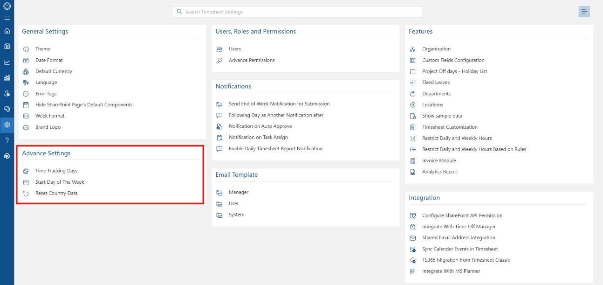
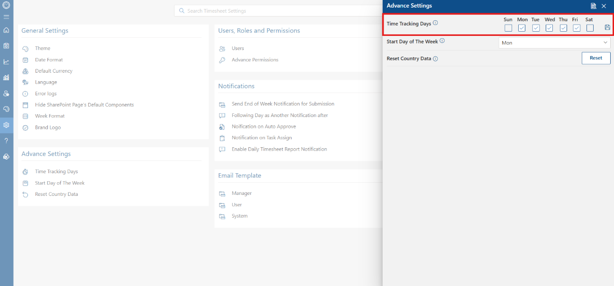
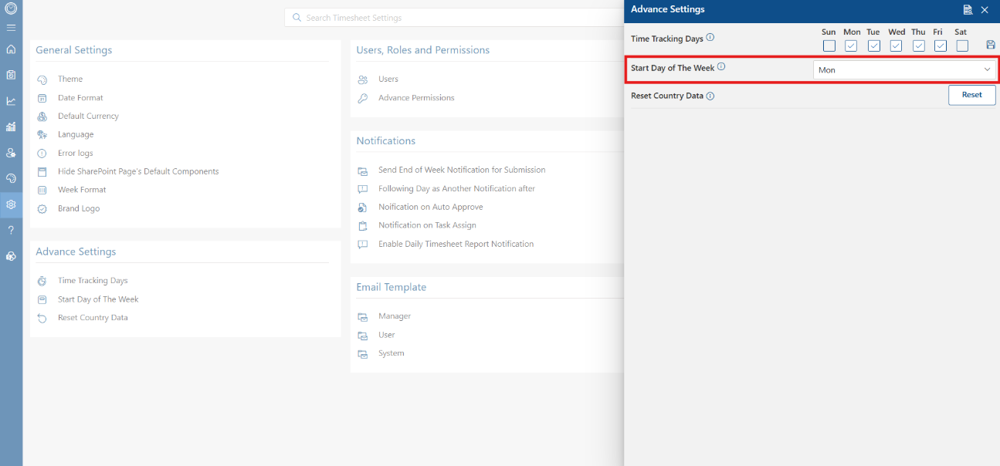
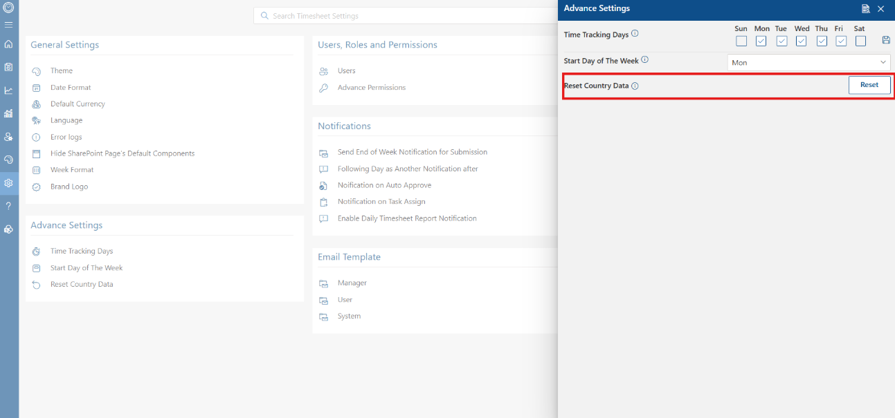

Advance settings
The Advance Settings section provides essential controls that allow administrators to configure active working days, establish the start day of the business week, and restore default country-specific settings across the application.
Accessing Advance Settings
To access these configuration options, navigate to the main settings dashboard and locate the Advance Settings section on the lower left menu. This section houses controls for Time Tracking Days, Start Day of The Week, and Reset Country Data.

Configuration Options
1. Time Tracking Days
The Time Tracking Days setting allows administrators to explicitly select which days of the week are available for logging work hours. By checking or unchecking specific weekdays, you control which dates appear active on user timesheets. Click the Save icon on the right to apply your working-day configuration.

2. Start Day of The Week
The Start Day of The Week dropdown defines the first day of the weekly calendar cycle across the application. Adjusting this setting updates the starting day across weekly timesheet views, planner calendars, and system reports to align with your organization's work week structure.

3. Reset Country Data
The Reset Country Data option allows administrators to revert all regional and country-specific configurations back to their factory default states. Clicking the Reset button refreshes locale data and restores default regional parameters.
